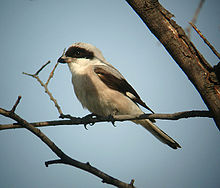
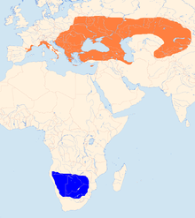
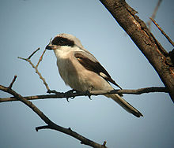
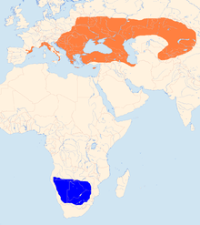

| Lesser Grey Shrike | |
|---|---|
|  | |
| Conservation status | |
| Binomial name | |
| Lanius minor Gmelin, 1788 |
|
|  | |
Summer Winter |
| Lesser Grey Shrike | |
|---|---|
|  | |
| Conservation status | |
| Binomial name | |
| Lanius minor Gmelin, 1788 |
|
|  | |
Summer Winter |
The Lesser Grey Shrike (Lanius minor) is a member of the shrike family Laniidae.
It is similar in appearance to the Great Grey Shrike Lanius excubitor and the Southern Grey Shrike L. meridionalis. It breeds in southeastern Europe and into Asia.
This species prefers dry open lowlands, and is prominent on telephone wires.
It is slightly smaller than the Great Grey Shrike, and has a black forehead and relatively longer wings.
This medium-sized migratory passerine eats large insects, small birds and rodents. Like other shrikes it hunts from prominent perches, and impales corpses on thorns or barbed wire as a "larder".
It is a scarce vagrant to western Europe, including Great Britain, usually as a spring overshoot.

{kind=link}
{kind=link}